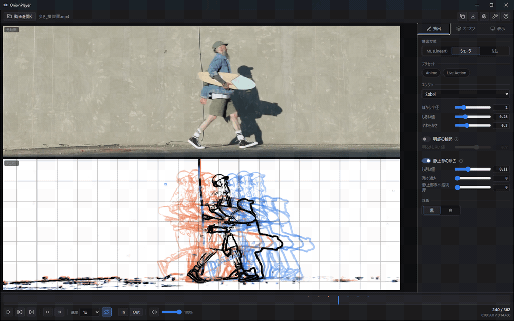
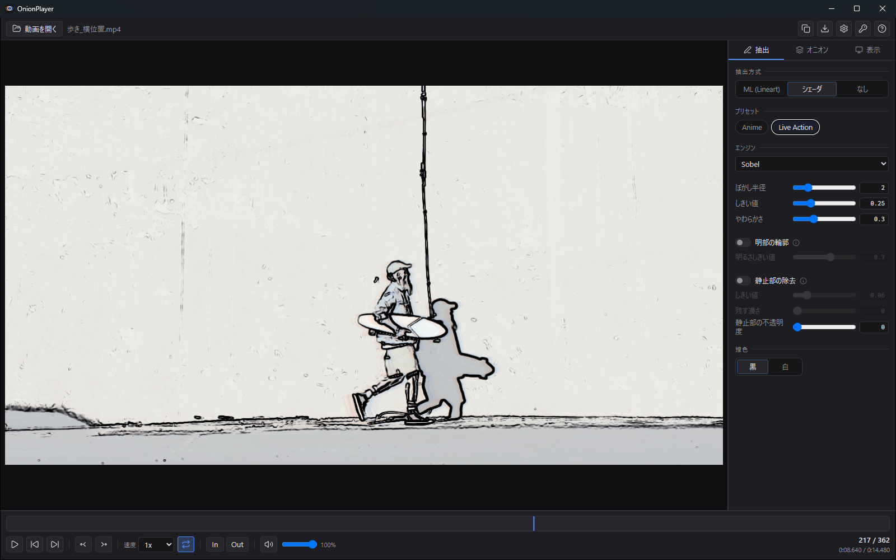
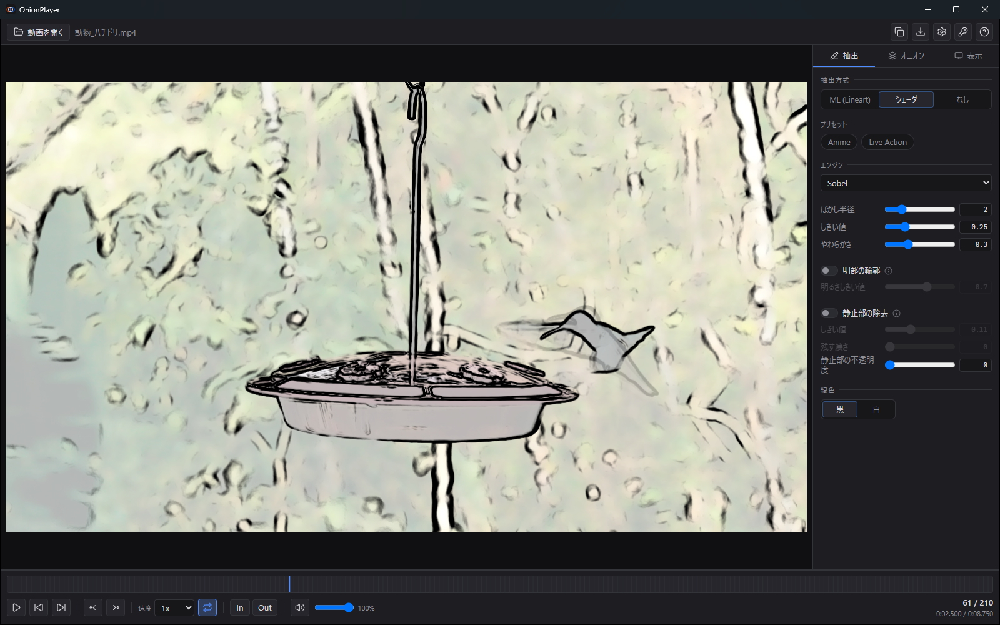
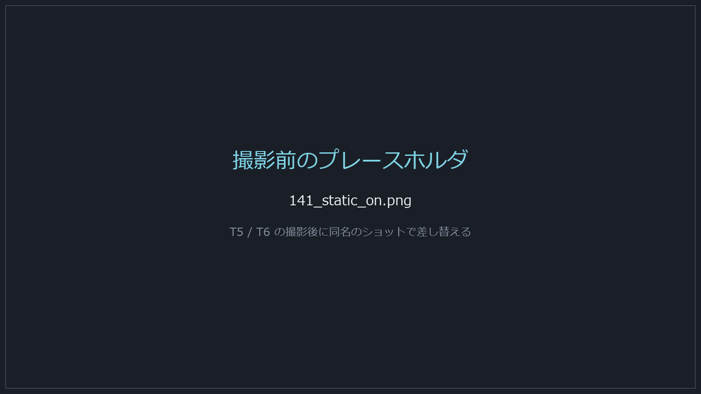

動画から線画を抽出し、前後のフレームを重ねて表示する Windows アプリ。 コマ送りでは記憶に頼るしかなかった間隔と軌道が、画面の上に直接現れます。

動きを研究したくて動画プレイヤーでコマ送りをしても、画面に出るのは常に現在のフレームだけです。 1つ前のコマがどこにあったかは記憶に頼るしかなく、タメ・ツメの間隔も、軌道の曲がり方も、 目で測ることができません。前後を往復して確かめているうちに、 最初に見たかった差がぼやけていきます。
OnionPlayer は前後のコマを同時に出します。 等間隔でゴーストを並べれば、それがそのままスペーシングチャートになります。 比べるという作業が、1枚の絵を読む作業に変わります。
ウィンドウにドラッグ＆ドロップするか Ctrl+O。
対応形式は mp4 と webm です。
右パネルで抽出方式を選びます。
シェーダ抽出は追加導入なしで、開いた直後から動きます。
実写なら Live Action、アニメなら Anime のプリセットから。

N キーでオニオンスキンが入ります。
目的に合わせて 中割り / 軌道 / スペーシング / 広域 のプリセットを選ぶだけです。
過去は暖色、未来は寒色に色分けされます。
前後それぞれ最大8層、層と層の間隔は1〜12コマ。 層ごとの濃さはイコライザで個別に上書きでき、遠い層の減衰も調整できます。
A でキーフレームを打ち、それを基準にゴーストを張れます。
「1層＝次のキーフレームまで」に切り替えれば、原画と原画の間を読めます。
1〜9 を押している間だけその層を濃く表示。
F で自動送り。紙をめくって見比べる動作を、そのままキーにしています。
背景モデルを作り、動いていない部分の線を消します。 背景のディテールに埋もれず、動いたものの線だけが残ります。
元動画と並べた2ペイン表示。オニオン側はリストや格子にも展開でき、 タイムシートのように読めます。方眼も重ねられます。
重ねた1枚・並べたシート・層ごとの複数ファイルの3形式。 透過背景と方眼の焼き込みを選べ、素材の解像度で出力します。


ポータブル版は展開してそのまま実行します。
設定・キーフレーム・導入したモデルは exe の隣の OnionPlayerData に入り、
Windows のユーザーフォルダは汚しません。フォルダごと移せば全部付いてきます。
再生・移動・オニオン・めくり・表示・抽出・書き出しまで、
操作は体系立ててキーに割り当てられています。F1 でいつでも一覧が開きます。
移動は映像の実タイムスタンプを基準にしているため、 可変フレームレートの素材でも1コマずつ厳密に進みます。 コマ送りと秒送りは別のキーに分けてあります。
ML 抽出に使うモデルはすべて MIT ライセンスで、 帰属表示をアプリ内と配布物の両方に記載しています。 何で線を起こしているかを隠しません。
実写の歩き・走り・アクションから、接地のタイミングと重心の移動を測る。
書き出した動画を読み込み、中割りの間隔が揃っているかをゴーストで確認する。
層ごとに書き出して並べ、動きの意図を伝える資料の下敷きにする。
このアプリの中心機能は無料側にあります。 オニオンスキンは全機能が無料です。
| 再生・トランスポート・区間ループ | 無料 |
|---|---|
| シェーダ抽出（Sobel / DoG / XDoG） | 無料 |
| オニオンスキン全機能 層数・間隔・イコライザ・レイアウト・プリセット・キーフレーム・めくり・パラパラ | 無料 |
| 静止部の除去 / 方眼 / 重ねる・並べる / 集中モード | 無料 |
| ML 抽出（Lineart） | Pro |
| 書き出し（保存・コピー・層ごと） | Pro |
mp4 と webm です。 MOV / ProRes / MKV や連番画像には対応していません。 別形式の素材は、事前に mp4 か webm へ変換してお使いください。
いいえ。配布物を軽く保つため同梱していません。
アプリ内の 導入 (~17MB) ボタンから取得すると、
ハッシュ検証を経て OnionPlayerData/models/ に配置されます。
導入そのものは無料で通ります（Pro が要るのは抽出の実行です）。
カメラが動いている素材では効きません。 背景も「動いたもの」と判定されるためです。この機能はカメラが固定された素材を前提にしています。
動きます。シェーダ抽出は WebGL で動くため GPU の要件は緩く、 ML 抽出は DirectML 非対応の環境では自動的に CPU にフォールバックします （その分は遅くなります）。
フォルダごとコピーすれば、設定・キーフレーム・導入したモデルは付いてきます。 ライセンスだけは付いてきません（Windows の資格情報として保存されるため）。 移した先で認証し直してください。
OnionPlayer.exe と同じ場所に作られる OnionPlayerData フォルダです。
Windows のユーザーフォルダには書き込みません。
書き込みできない場所に置いた場合も、観る機能はそのまま使えます（設定が保存されないだけで、
そのことは画面に表示されます）。
オニオンスキンは全機能が無料です。線が重なった瞬間に、 この道具が何をするものかが分かります。
Windows 10 / 11 x64 ・ インストール不要 ・ β版